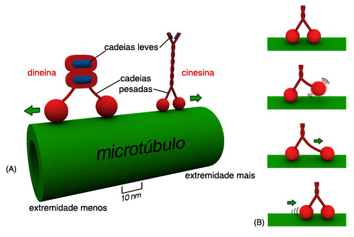

O que é a Cinesina?
A cinesina é uma proteína motora crucial para o transporte intracelular. Ela é responsável por mover organelas, vesículas e outras cargas essenciais ao longo dos microtúbulos dentro das células.
Como Funciona a Cinesina?
A cinesina utiliza energia derivada da hidrólise de ATP para "caminhar" em direção à extremidade positiva dos microtúbulos. Esse movimento é essencial para a distribuição eficiente de materiais dentro das células.
Importância da Cinesina
- Transporta vesículas contendo neurotransmissores em neurônios.
- Auxilia no posicionamento de organelas como mitocôndrias e lisossomos.
- Contribui para a divisão celular ao movimentar cromossomos.